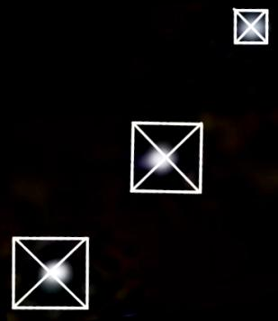

Are Egyptian pyramids aligned with the stars?
The ancient Egyptians watched Earth’s night sky closely and named constellations after their gods. But did the builders of the pyramids really make these monuments with the stars in mind?
Pyramid ‘star shafts’

The Orion Correlation Theory grew from researchers’ interpretations of two mysterious, narrow shafts discovered in the Great Pyramid of Giza. These shafts extend from the so-called “King’s Chamber” into the pyramid’s walls. Some experts have suggested they are air shafts. But it’s unclear why the dead would need access to oxygen. Other researchers, however, think these tunnels served as pathways to heaven.
And in the 1960s, a group of Egyptologists suggested that these were actually star shafts, built to point toward important stars and constellations. Two researchers, Virginia Trimble and Alexander Badawy, found that one of the shafts seems to aim in the general direction of where the north star would’ve been when the pyramids were constructed. The other shaft, generally, points toward Orion’s Belt. These two sections of the sky were also known to be important in ancient Egyptian mythology.
The pole stars, including the north star, were known as “imperishable stars,” or “the indestructibles.” The Egyptians tied these unflinching stars with their beliefs about the afterlife, and thought their deceased pharaohs would join them there. “I [the king] will cross to that side on which are the Imperishable Stars, that I may be among them,” one passage reads. Similarly, Orion was also important to ancient Egyptian culture because its stars represented Sah, the father of the Egyptian gods.
In this theory, these canals and water elevators allowed the stones to be moved pretty easily. Although there is no concrete documented evidence of this theory, traces of water throughout the structure and imperfections along the middle of all four sides have been identified to support the WST.
The shafts likely wouldn’t have been useful for actually observing these objects, though. They were roughly oriented, with horizontal sections and large stones blocking their exit. But despite a number of attempted shaft explorations, the mystery of their true purpose has persisted for more than half a century.
Giza celestial alignments
Beyond the shafts, there are other possible alignments to consider, too. For example, sunset on the winter solstice falls above the Pyramid of Menkaure as seen from the Great Sphinx of Giza. And the corners of the Great Pyramid of Giza also align well with the cardinal directions — north, south, east, and west. Researchers have spent years trying to understand how the builders were able to align the pyramid so precisely, and most accept that the ancient engineers used the motion of the Sun.
So, it’s clear that the pyramids hold celestial significance and that they were built with a mastery of the sky in mind. Those ideas are not at all controversial. The controversy stems from the notion that each of the three pyramids were specifically positioned and oriented to represent Orion’s Belt. If you look at Bauval’s overlay of the pyramids' placement and the stars of Orion's Belt, you can definitely see the similarities. Yet, the alignment still isn’t perfect.
It also isn’t completely honest. In 1999, astronomers using planetarium equipment exposed some serious liberties taken by proponents of the idea. In order for the pyramids to take the shape of Orion’s Belt, you have to invert one or the other. So, the pyramids don’t really mirror the celestial alignment in the way that's often presented. What’s more, the stars in Orion’s Belt have moved since the pyramids were constructed, so their relative positions would’ve been different back then.